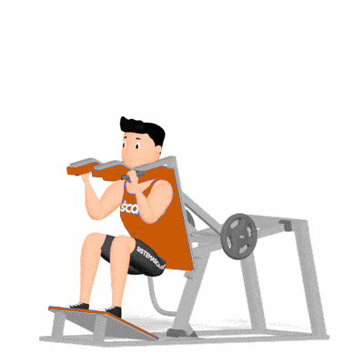

Agachamento na Máquina Squat

Exercício de musculação realizado em máquina tipo squat para fortalecimento e hipertrofia de quadríceps, glúteos e posteriores, com maior estabilidade articular. Indicado para praticantes de todos os níveis.
Ficha Técnica
Tipo: Musculação
Grupo Muscular: Perna
Aparelho: Nenhum
Músculos: Nenhum
Como realizar
- Ajuste a máquina (encosto/apoio) e posicione os ombros/almofadas corretamente;
- Coloque os pés na plataforma na largura dos ombros, com leve rotação externa se necessário;
- Desengate a trava (se houver) mantendo o tronco firme e abdome contraído;
- Inspire e flexione os joelhos, descendo o quadril até aproximadamente paralela ao solo;
- Mantenha coluna neutra e joelhos alinhados com os pés durante toda a descida;
- Expire e empurre a plataforma até extensão controlada dos joelhos, retornando à posição inicial;
- Reengate a trava ao final da série e repita conforme prescrição.
 RC STORE
RC STORE